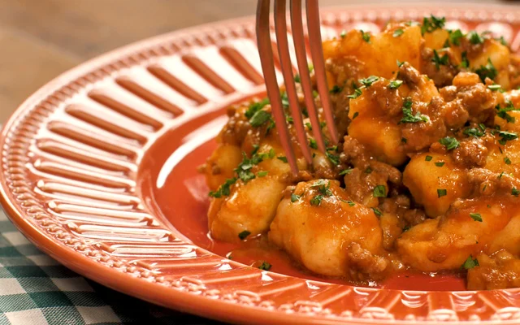
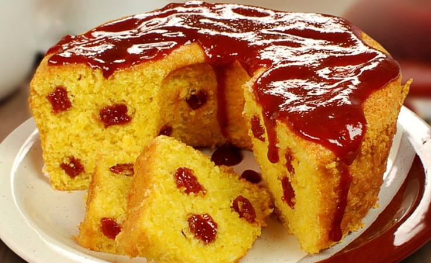

Que Derrete na Boca O truque é usar a batata Asterix (aquela da casca rosada), que tem menos água.
Comida mineira que exige o tempo certo de refogado.

Aquele bolo fofinho que já sai com o recheio derretido.